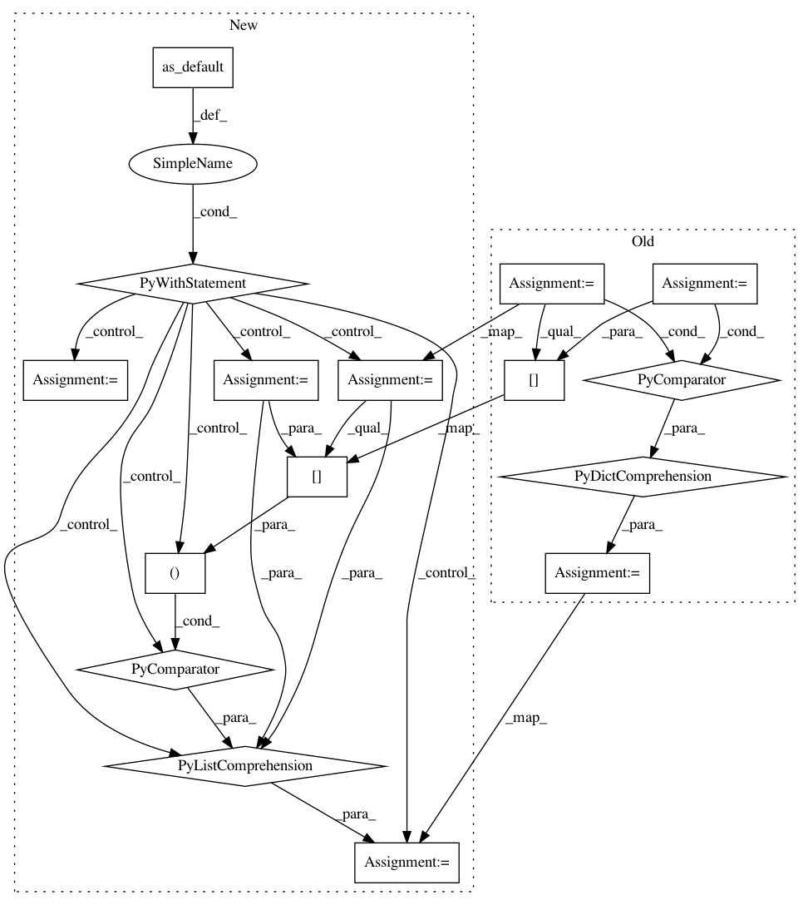

38e9391dcb5e8991a1a663601ce78bf7f08df474,tensorflow_transform/graph_tools_test.py,GraphToolsTestUniquePath,testGetUniquePath,#GraphToolsTestUniquePath#Any#Any#Any#Any#,730
Before Change
def testGetUniquePath(self, create_graph_fn, feeds, replaced_tensors_ready,
expected_calls_dict):
tensors = create_graph_fn()
replaced_tensors_ready = {
tensors[name]: ready for name, ready in replaced_tensors_ready.items()
}
for name in expected_calls_dict:
// This is used to construct the debugging string below.
After Change
def testGetUniquePath(self, create_graph_fn, feeds, replaced_tensors_ready,
expected_calls_dict):
with tf.compat.v1.Graph().as_default() as graph:
tensors = create_graph_fn()
replaced_tensors_ready = [(tensors[name], ready) for name, ready
in replaced_tensors_ready.items()]
for name in expected_calls_dict:
// This is used to construct the debugging string below.
actual_needed_matchers_to_pass = []
def describe_path_fn(x, parents=None):
if parents is None:
parents_str = ""
else:
parents_str = ", parents={}".format(
list(map(_value_to_matcher, parents)))
actual_needed_matchers_to_pass.append("({}{}),".format( // pylint: disable=cell-var-from-loop
_value_to_matcher(x, True), parents_str))
if isinstance(x, tf.Operation):
return x.node_def.name
if isinstance(x, tf.Tensor):
self.assertLessEqual(len(parents), 1)
return x.name
if isinstance(x, (six.text_type, str, bytes)):
return x
raise ValueError("Unexpected type: {}".format(x))
path_cb_mock = mock.MagicMock(side_effect=describe_path_fn)
graph_analyzer = graph_tools.InitializableGraphAnalyzer(
graph, {x: tensors[x] for x in feeds}, replaced_tensors_ready,
path_cb_mock)
graph_analyzer.get_unique_path(tensors[name])
try:
path_cb_mock.assert_has_calls(expected_calls_dict[name])
self.assertEqual(
path_cb_mock.call_count, len(expected_calls_dict[name]),
"Number of expected calls != number of actual calls for {}: {}"
.format(name, path_cb_mock.call_args_list))
except AssertionError:
tf.compat.v1.logging.error(
"The following is a list of matchers for {}:\n{}".format(
name, "\n".join(actual_needed_matchers_to_pass)))
raise
def _value_to_matcher(value, add_quotes=False):
Returns a matcher for the value - used for debugging failures.
if isinstance(value, tf.Operation):
return _OpMatcher(str(value.node_def.name))
In pattern: SUPERPATTERN
Frequency: 3
Non-data size: 16
Instances
Project Name: tensorflow/transform
Commit Name: 38e9391dcb5e8991a1a663601ce78bf7f08df474
Time: 2019-10-10
Author: tf-transform-dev@google.com
File Name: tensorflow_transform/graph_tools_test.py
Class Name: GraphToolsTestUniquePath
Method Name: testGetUniquePath
Project Name: tensorflow/transform
Commit Name: 38e9391dcb5e8991a1a663601ce78bf7f08df474
Time: 2019-10-10
Author: tf-transform-dev@google.com
File Name: tensorflow_transform/graph_tools_test.py
Class Name: GraphToolsTest
Method Name: testInitializableGraphAnalyzerConstructorRaises
Project Name: tensorflow/transform
Commit Name: 38e9391dcb5e8991a1a663601ce78bf7f08df474
Time: 2019-10-10
Author: tf-transform-dev@google.com
File Name: tensorflow_transform/graph_tools_test.py
Class Name: GraphToolsTest
Method Name: testDetermineReadyTensorsAndTableInitializers